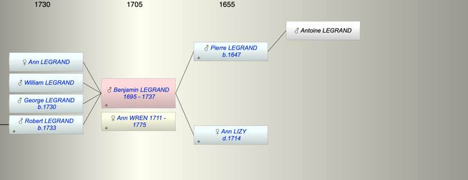

| [Index] |
| Benjamin LEGRAND (1695 - 1737) |
|  |
| b. 1695 at Canterbury |
| +. Ann WREN (1711 - 1775) |
| d. Oct 1737 aged 42 |
| Parents: |
| Pierre LEGRAND (1647 - ) |
| Ann LIZY ( - 1714) |
| Siblings (10): |
| Mary LEGRAND (1673 - ) |
| Peter (Pierre) LEGRAND (1675 - ) |
| Abraham LEGRAND (1676 - ) |
| Anne LEGRAND (1678 - ) |
| Mary LEGRAND (1680 - ) |
| John (Jean) LEGRAND (1683 - ) |
| Ester LEGRAND (1685 - 1738) |
| Jaques LEGRAND (1690 - ) |
| William (Guillaume) LEGRAND (1691 - ) |
| Rachael LEGRAND (1692 - ) |
| Children (4): |
| Ann LEGRAND |
| William LEGRAND |
| George LEGRAND (1730 - ) |
| Robert LEGRAND (1733 - ) |
| Events in Benjamin LEGRAND (1695 - 1737)'s life | |||||
| Date | Age | Event | Place | Notes | Src |
| 1695 | Benjamin LEGRAND was born | Canterbury | Note 1 | ||
| 1714 | 19 | Death of mother Ann LIZY | Canterbury | Note 2 | |
| 1730 | 35 | Birth of son George LEGRAND | Canterbury | bap All Saints, Canterbury | |
| 1733 | 38 | Birth of son Robert LEGRAND | Canterbury | Note 3 | |
| Oct 1737 | 42 | Benjamin LEGRAND died | |||
| Death of daughter Ann LEGRAND | died unmarried | ||||
| Death of son William LEGRAND | Note 4 | ||||
| Personal Notes: |
| His will is available on the Genealogist PROB 11/685. He was a silk weaver and he refers to his father Peter LeGrande, deceased, his wife Ann, his property in All Saints, Canterbury, his sons George (property on Challock) , Robert (property in St Peter the Apostle) and William and his daughter Ann, property in Chartham, his brothers Peter LeGrand and Samuel Lambert. His neices and nephews: Peter and Samuel Lambert, Paul and Hester Fourestier. John and Mary LeGrande son and daughter of his deceased bother John. Probate granted 1737 |
| Created on a Mac™ using iFamily for Mac™ on 8 Oct 2023 |